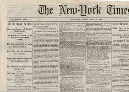
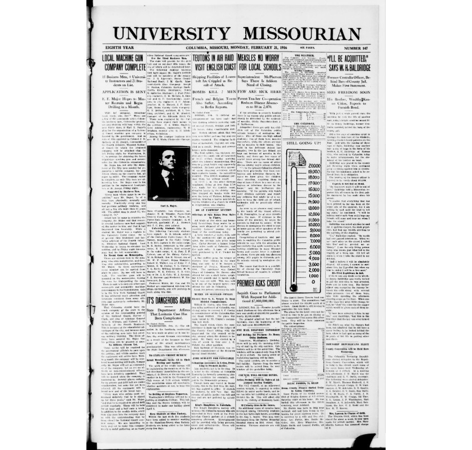

Historic Newspapers
Here are some pictures of some historic newspapers from the Library of Congress. The John Adams building is a historic peice of history and is drawn in the Prints and Photographs section of my website. Below is also a link for you to visit the Library of Congress newspapers collections. Thanks for visiting this page!
Click here to visit the newspapers collections from the Library of Congress. 